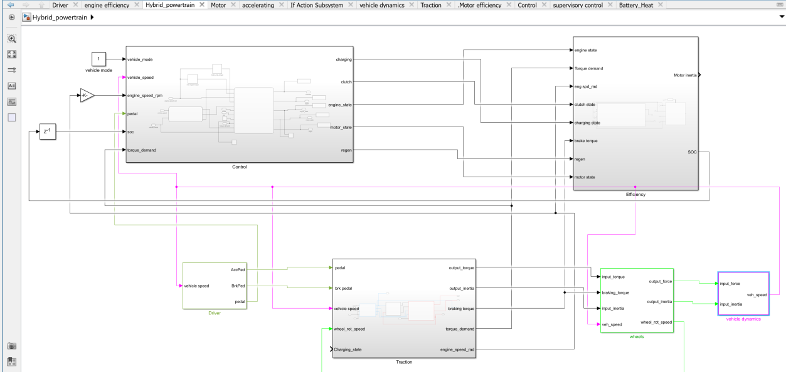
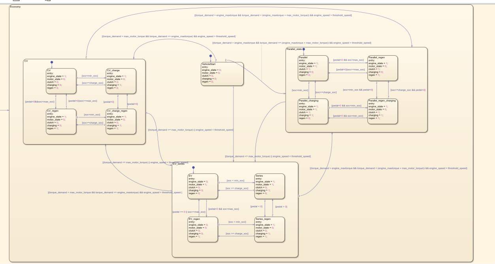
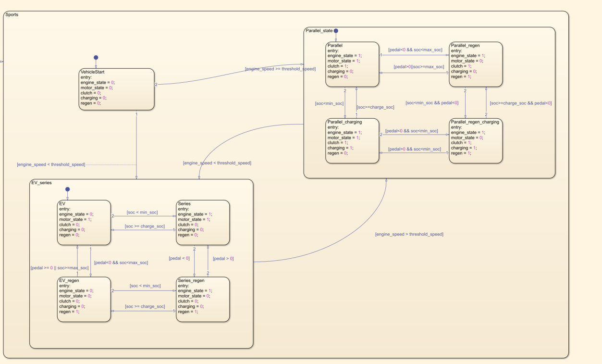
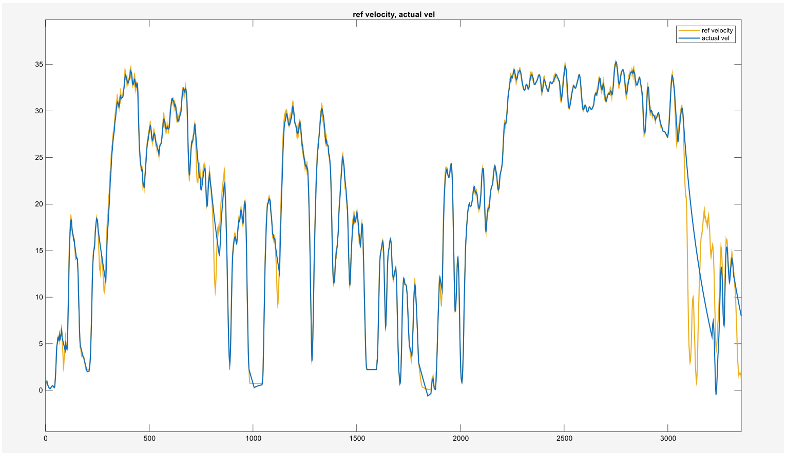
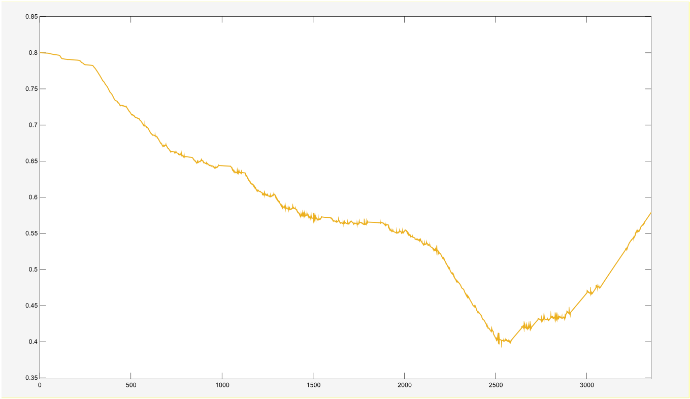

Project overview
The project combined component sizing, vehicle modeling, and rule-based energy management for a series-parallel hybrid powertrain. The simulation coordinated engine and motor operation in response to driver demand, vehicle speed, and battery state of charge.
The work formed part of a team study comparing conventional, battery-electric, and hybrid architectures. The figures below focus on the hybrid model and its supervisory control.
My contribution
- Contributed to powertrain component sizing and the integrated MATLAB/Simulink model.
- Developed supervisory control logic in Stateflow to select propulsion and charging modes.
- Evaluated simulated fuel use, speed response, and battery state of charge over the driving cycle.
Powertrain architecture
The hybrid model combines the engine, electric machine, battery, and driveline. Supervisory commands determine which torque path is active and when the engine supports propulsion or battery charging.
{kind=link}

Supervisory control
Economy and Sport mode logic use driver demand, speed, and state of charge to select operating states. Stateflow makes the transition conditions and commanded actions explicit, including electric propulsion, engine assistance, charging, and regenerative braking.
{kind=link}

{kind=link}

Driving-cycle evaluation
{kind=link}

{kind=link}

Results and interpretation
The study reported 64 mpg for the hybrid configuration versus 43 mpg for the conventional baseline on the modeled cycle. This is a comparison between powertrain architectures and their operating strategies.
The hybrid run ended at a lower battery state of charge. The result therefore includes battery-energy consumption and does not establish charge-sustaining fuel economy.
This project developed experience in system-level modeling, supervisory state-machine design, and interpreting energy use alongside vehicle response.